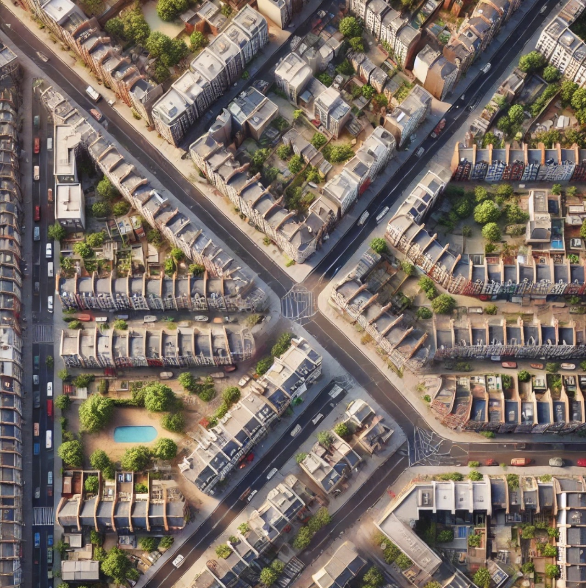

London Climate Action Week 2026
Where You Live Shapes Your Health
Health is also built into homes, streets and everyday routes.
Different Places, Different Health Pathways
Built environment factors change what people feel, breathe and do. The pathway is never one-size-fits-all.
From Place To Pathways
Tap a place factor. See the metric, then follow exposure and behaviour in parallel.
What This Reveals
Environmental pathways are social pathways. Burdens and choices are not evenly shared.
Responses Across Scales
Action has to work from buildings to streets, neighbourhoods and national policy.